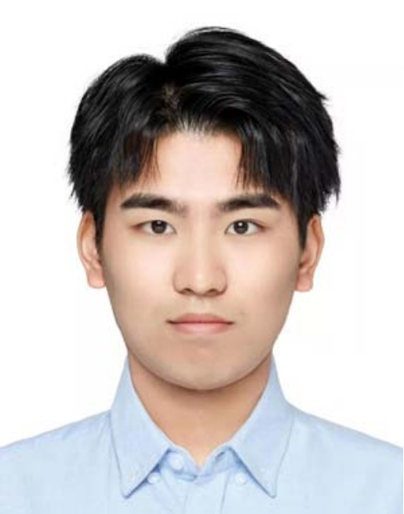

Postdoctoral Research Fellow,
Department of Electrical and Computer Engineering,
National University of Singapore.
4 Engineering Drive 3, Singapore 117583.
E-mail: zeyuxiao1997@gmail.com; zeyuxiao1997@163.com